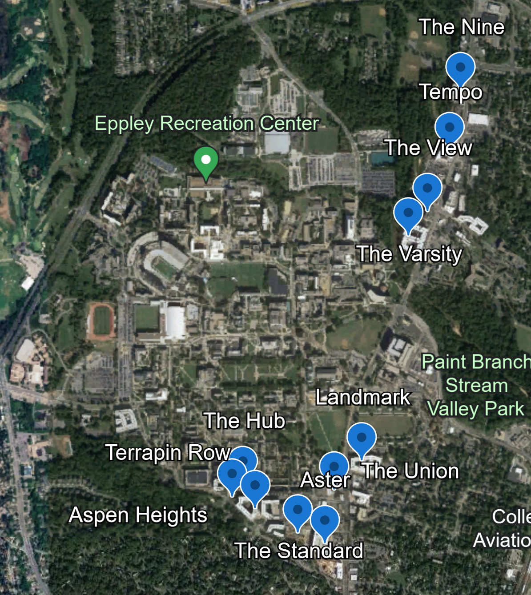

In the last 15 years, the city of College Park has seen a total of 11 new off-campus apartments fully constructed and now operational. All of these apartments are within a two-mile radius of the University of Maryland, and therefore house only students, with the exception of one. Why were so many built in such a short period of time? What factors lead to this? Are there now too many apartments?
This image is from a screenshot taken from Google Earth. The blue pins represent the locations of every student apartment built since 2010 in the city of College Park.
These are all questions that people familiar with the College Park area ponder. Theoretically, most of these new apartments can trace their reasoning for their College Park location back to one particular apartment, or better yet, the sale of one particular apartment.
In 2010, construction for the University View apartments was completed, and the first modern off-campus student apartments were established in the city. Prior to the completion of these apartments, demand for off-campus student housing was “acute,” according to College Park City Council Member, Susan Whitney. Many students lived in off-campus houses, rather than apartments, and many in towns outside of College Park including Hyattsville, Berwyn Heights and Greenbelt.
However, this all began to change in the coming years.
In 2018, the University View Apartments sold to Chicago’s Scion Group for $235 million. At the time, this sale was the largest ever single-asset student trade in the United States, according to a press release from CBRE, the company representing the sellers.
This sale ultimately caught the attention of many development companies around the country, and many wanted a piece of the previously untapped population of UMD students living off campus. According to Abby Blakeman, the senior marketing manager at Aspen Heights (one of the new off-campus apartments recently constructed), Asset Living, the management company that owns Aspen Heights, chose the College Park area to expand in “because there was a lot of revenue to be had, as portrayed by the record-breaking sale in 2018.”
Blakeman also went on to say that before 2018, Asset Living did not own any off-campus apartments near UMD, even though they had many existing apartments at other major state schools around the country. Since 2018, and the $235 million sale of the University View Apartments, Asset Living now owns three of the 11 new off-campus apartments in College Park; The Nine, Tempo, and Aspen Heights.
This photo was taken by me standing on Knox Road, highlighting the newly finished Aspen Heights apartments surrounded by other new apartments (Joe Francomano).
In addition to the revenue to be had in the College Park area, apartment companies can credit the College Park and Maryland state governments for supplying additional reasons to expand to this area.
In 2023, Maryland Governor Wes Moore established the Housing Expansion and Affordability Act, which aims to expand affordable housing throughout the state. The act will add $110 million in Rental Housing Investments, which will create 5,100 new housing units and lift 1,473 families out of poverty, along with $115 million in additional funding for priority housing and community development investments.
Gov. Wes Moore (D) goes over notes ahead of providing public testimmony in support of his affordable housing legislation package on February 20, 2024. Photo taken by Danielle J. Brown of "MarylandMatters.org".
In addition to this legislation, the College Park City Council passed a needs-based student housing subsidy pilot program in April of this year, according to Councilmember Whitney. The program will grant 60 subsidies of $1,250 to full-time undergraduate students who qualify for a Federal Pell Grant and have a rental lease in a College Park apartment or house. Another 60 subsidies of $1,250 will be given to full-time graduate students with a lease in College Park earning 60 percent or less of the area median income.
Both of these programs have encouraged and will continue to encourage apartment development companies to keep a wide eye on any new construction opportunities in the area, because now the pool of people who can afford modern housing has increased.
Even though it was proven that there was revenue to be made in the apartment business in College Park, has this market officially reached its saturation point? According to some experts in the field, it already has.
According to market research from Blakeman, if the 62% of UMD students who live off campus (percentage from usnews.com) are evenly distributed among all the off-campus apartments, not even 80% of each apartment building will be filled. This has led many of these new apartments to shift their marketing strategies to students who attend other universities in the area, including Howard University and other Washington D.C. schools, Blakeman said.
These charts show UMD's enrollment numbers compared to the increase in available modern apartment units. The charts identify that even though UMD has not drastically increased their accepted students, the number of new, off-campus apartments has been drastically increasing.
A simple solution to this excess in off-campus apartments would be an increase in accepted students here at UMD. However, Jennifer Lindstrom, manager for housing partnerships, says she hasn’t heard of any plans from the university to admit more students.
There are definitely mixed emotions among College Park residents regarding the increase in off-campus apartments, but Lindstrom wanted to assure residents and students that even though it may take time, overall improvements in the city will come with these developments.